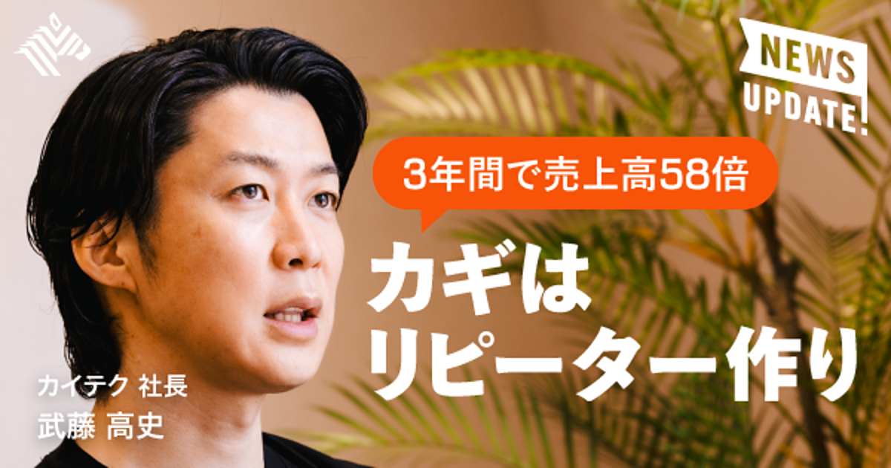
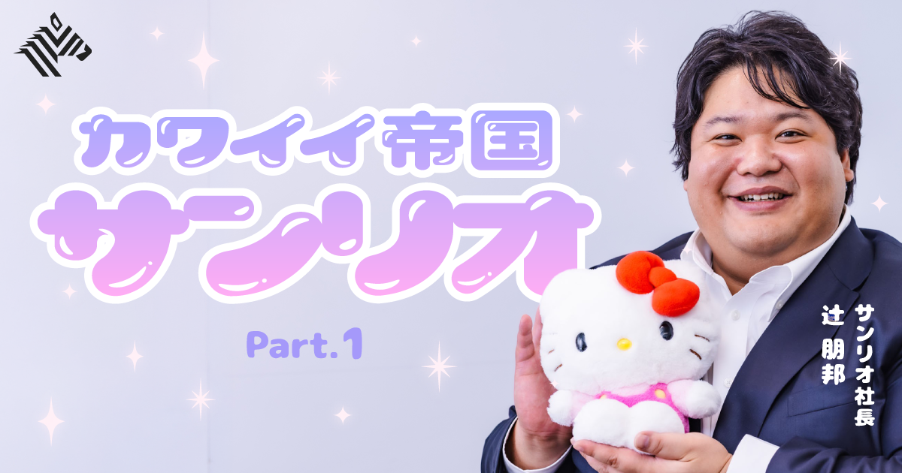
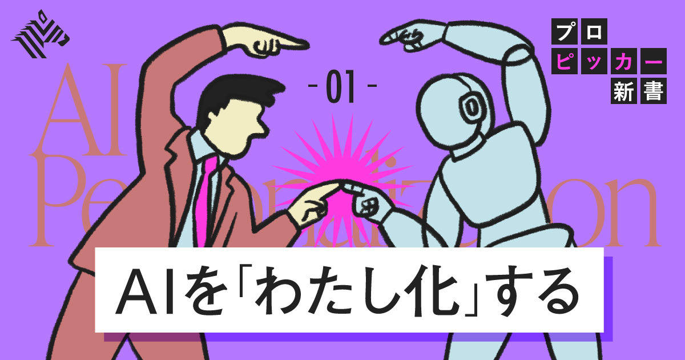

01高級別荘のNOT A HOTEL、住宅事業に参入－申真衣氏が子会社CEOに就任
発行日時：2026年10月5日 13:48 JST
あなたに関係ありそうな理由
住宅の販売では、デザインや集客だけでなく、引き渡し後の品質・保証・保守まで含めて事業を設計する視点が必要になります。
概要
高級別荘の共同所有サービスを手掛けてきたNOT A HOTELは、10月2日付で社名をNOTAへ変更し、住宅とプライベートジェットの販売に踏み出すと発表した。グループ会社として住宅事業を担うNOT A HOUSEを設立し、ゴールドマン・サックス証券で金融商品開発を手掛け、GENDAで社長を務めた申真衣氏をCEOに起用する。これまで栃木県那須や宮崎県青島でシェア別荘を展開し、富裕層の顧客基盤をつくってきた会社が、滞在する場所を共同で持つサービスから、住まいそのものを売る領域へ軸足を広げる動きである。
まずは同社がデザインした住宅を予約販売し、価格は6980万円からとする。濵渦伸次社長は具体的な販売目標は示さなかったが、将来は年間数百棟単位での販売を目指したいと話した。NIGO氏が手掛ける「NIGO JET」の販売も始め、既存のNOT A HOTEL事業では安藤忠雄氏らとの新プロジェクトにも取り組む。住宅、別荘、移動手段を個別の商品として並べるだけでなく、建築やデザインを核に、顧客の滞在・移動・所有の体験を広げようとしていることが読み取れる。
一方、別荘の共同所有と住宅販売では、売った後に求められる責任の重さが異なる。表示コメントでは、住宅は施工品質、保証、アフターサービスが信頼を左右し、富裕層向けの高いデザイン性だけでは事業を拡大しにくいという見方が出た。建設をどの体制で担うか、地域や工事会社との関係をどう築くか、長期保守を誰が引き受けるかも、記事の公表内容とは別に今後を読む論点になる。コメントには、規格化で効率を出す部分と、一棟ごとの個性を残す部分の切り分けを問う意見もあった。
この発表の重要性は、ブランドの世界観を示すことと、住宅事業として再現性を持つことを同時に求められる点にある。予約販売の段階では、完成前の商品に顧客が何を期待し、どこまで説明を求めるかが問われる。事業を見る側は、販売棟数の目標だけでなく、引き渡し後の修繕、保証、顧客対応を含む運営コストと責任分担を確認したい。高額な住まいほど、建物の完成度に加え、暮らし始めてからの安心をどう商品化できるかが、ブランドを継続させる条件になる。
仕事や会話で使える一言
「高額住宅は、売る瞬間より引き渡し後の安心をどう設計するかが信頼を決めますね。」
NewsPicks原文を読む
02【売上58倍】介護のスポットワークが驚異の急成長をしていた
発行日時：2026年10月5日 05:30 JST

あなたに関係ありそうな理由
人手不足の現場では、人数を集めるだけでなく、必要な技能を切り出し、受け入れや再来訪の仕組みまで整える必要があります。
概要
介護・医療に特化したスポットワーク仲介のカイテクが、有資格者に登録を限定して急成長している。スポットワーク市場全体は2025年の総賃金額が1503億円、延べ労働時間が1億2953万時間と、いずれも2022年比で約4倍になった。カイテクは介護福祉士や看護師などに対象を絞り、専用アプリのユーザーは約141万人、利用事業所は約3.2万カ所、売上高は3年間で58倍に拡大した。単に空いた時間を埋めるサービスではなく、資格と経験を持つ人の短時間就労を、慢性的な人手不足の現場へつなぐモデルである。
背景には、介護職員数と必要数の隔たりがある。2024年10月時点の介護職員は212.6万人だが、必要数は2026年度に約240万人、2040年度に約272万人と推計される。創業者の武藤高史氏は、常勤では働けなくても短時間なら働ける有資格者の「埋蔵時間」に着目した。記事では、480万人超と見積もる有資格者が平均月4.6回、1回6.2時間働けば、年間約16.6億時間を生み出せるという仮説が示される。登録者の76％は経験3年以上で、47都道府県の平均マッチング率は約90％だ。
もっとも、介護は人命やけがに結び付く業務であり、外部人材を入れることには事故と教育の不安がある。カイテクは現場経験のあるカスタマーサクセス担当が不足時間帯や必要技能を聞き取り、食事・入浴・排泄介助、認知症対応などを募集条件に細かく反映する。受け入れマニュアルを事業所と作ることもあり、ワーカーと事業所が相互評価し、事業所が限定公開や指名をできる仕組みも設けた。2回以上同じ事業所で働く人の割合は90％、10回以上の人は70％で、単発の出会いを継続利用に変えている。
導入事例のSOYOKAZEでは、スポット勤務を経験した人が月間採用者の約20％を占め、派遣スタッフの利用コストを約3分の1まで抑えたという。カイテクは7自治体とも協定を結び、旭川市では事業所向けセミナー後に求人を出す市内事業所数が約5.1倍になった。ただし、同社がカバーする事業所は全体の約10％にとどまる。表示コメントには、資格者の復職機会として期待する声と、根本的な処遇改善や日常的なチーム連携を置き換えられないという注意が並んだ。人手を補う仕組みを、現場の安全と育成を損なわない形で広げられるかが重要になる。
仕事や会話で使える一言
「スポット人材は、募集よりも受け入れ設計と再来訪の仕組みが成否を分けますね。」
NewsPicks原文を読む
03【サンリオ】Z世代が大熱狂。「最強の日本企業」の復活劇
発行日時：2026年10月5日 05:30 JST

あなたに関係ありそうな理由
長く親しまれたブランドでも、組織、商品回転、SNS評価を変えれば、新しい顧客との接点をつくり直せることを示す事例です。
概要
サンリオは、ハローキティを起点にした一発の人気ではなく、複数キャラクターを継続的に育てる会社へ変わろうとしている。キティは1974年に日本で生まれ、年間約5万種類の商品、世界130の国と地域で展開され、累計売上は米TitleMax推計で約800億ドルに達する。2026年3月期のサンリオは売上高1940億円、営業利益778億円と、ともに過去最高を更新した。現社長が就任した2020年以降に時価総額は約1.4兆円となり、記事は好調な数字の背景を、商品・組織・デジタルの改革から追っている。
辻朋邦社長が就任当時に直面したのは、単年度の施策を積み上げる一方で、長期のキャラクター戦略を立てにくい組織だった。役員を含む大幅な人の入れ替えを行い、外部採用者と既存社員に何を求めるかを明確にした。社員アンケートでは「挑戦が称賛される社風」の評価が5点満点で2.6点だったため、変化を求めるだけでなく、試してよいという許可と小さな成功の共有を重ねたという。コロナ禍で店舗やテーマパークが閉じ、赤字となった時期に改革を進め、各国でデジタル施策を増やしたことも、その後の回復につながった。
商品ではSKUを単に減らすのではなく、廃棄を減らしながら回転と利益を高める仕組みへ見直した。以前は売上や消化率が中心だった商品部の評価に、SNSのインプレッション数を加えた。すると、商品を作る担当者が、X、TikTok、Instagramでどう広がるかまで考えるようになった。撮影しやすいよう磁石を入れたぬいぐるみのように、利用者が投稿したくなる設計を商品へ組み込む。キティだけでなく、シナモロール、クロミ、マイメロディなどがそれぞれ別の層へ届き、公式発信と利用者の投稿が相互に露出を増やす構造をつくっている。
記事では、450を超えるキャラクターをIPポートフォリオとして捉え、人気の波を互いに補いながら成長させる考え方も示される。北米は目標シェア10％に対し足元は4％で、欧州、インド、アフリカには開拓余地があるという。サンリオは顧客との接点を「夢中時間」だけでなく、日常でキャラクターがそばにいる「寄り添い時間」として測る。表示コメントでも、かわいさを大人にも開いた点や、SNSを評価に組み込んだ改革が論点になった。人気の指標だけを追わず、商品、発信、ファンの参加が循環する状態をどうつくるかが、長期ブランドの課題になる。
仕事や会話で使える一言
「ブランドの再生は、商品数を減らすことではなく、価値が回る仕組みを作ることですね。」
NewsPicks原文を読む
04【秘技】AIで作るものが「つまらない問題」これで解消します
発行日時：2026年10月5日 05:30 JST

あなたに関係ありそうな理由
AIを使う資料や連絡文は、作成時間を短くするだけでなく、相手が判断・行動できる情報になっているかで価値が決まります。
概要
AIで見栄えのよい資料や図を短時間で作れても、読み終えた人に目的が残らなければ価値は薄い。記事は、その原因をAIの利用そのものではなく、誰に何を判断してほしいかを人が決めず、生成結果をそのまま渡す使い方にあると捉える。社内ツール導入の提案なら、一般論の機能説明ではなく、どの業務を試すのか、誰が使うのか、予算上限はいくらか、効果をどう確かめ、期待どおりでなければ何をするのかが必要になる。作り手が省いた検討を読み手に探させれば、AIの速さが相手の負担に変わってしまう。
具体的なプロンプト例では、読み手を部署責任者と予算判断者、目的を翌月の試行予算の可否と定める。最新版の資料を探し直す、決定事項が連絡に埋もれる、引き継ぎで同じ説明を繰り返すという現状課題を示し、「困りごと→試して確かめたい改善」の順に直す。試す業務、対象者、担当者、予算、測定方法、継続・見直しの条件を二ページ目にまとめ、未確定の数字は補わず「要確認」とする。抽象的な流行語や将来展望を足すより、今回の意思決定に不要な要素を外すことが、伝わる資料への近道になる。
図版でも、何を直したいかと理由を具体的に言語化する必要がある。人とAIの役割分担を示す図では、「90％」という数字を目立たせるのでなく、条件を決める、案を作る、内容を確かめるという役割を見出しにした。スマートフォンでも追えるよう横三列を縦三段に変え、最初と最後の人の役割が混同されないようにする。最後は出典、事実、既存コンテンツとの類似も確認する。見た目の良し悪しより、読み手の判断に必要な情報が、誤りなく順番どおり届くかを優先する考え方だ。
筆者は、人が担うべき部分を「最初と最後の5％」と表現する。最初に相手、目的、制約を定め、中間の調査・整理・たたき台をAIへ任せ、最後に事実と目的の整合を確認して届けるという分担である。5％は実測時間ではなく、責任を持つべき判断の比喩だ。記事後半では、目的、相手、事実、次の行動、表現の順に見直すことを勧める。表示コメントでも、生成物の手直しを読む人へ押し付けない編集力が論点になった。AIの出力を採用する理由を自分の言葉で説明できるかを、公開・送信前の基準にしたい。
仕事や会話で使える一言
「AIに任せる前に判断を定義し、渡す前に自分の言葉で説明できるか確かめたいですね。」
NewsPicks原文を読む
05「焼肉きんぐ」システムに不正アクセス、1000万件超の個人情報流出
発行日時：2026年10月5日 18:05 JST
あなたに関係ありそうな理由
会員登録や予約を扱う事業では、集める個人情報を必要最小限にし、事故時の遮断・連絡・再発防止を平時から決めておく必要があります。
概要
物語コーポレーションは10月5日、運営する「焼肉きんぐ」アプリの会員管理システムで不正アクセスが起き、会員情報の漏えいが判明したと発表した。ユーザー登録数約1080万件のうち、漏えい件数は約1078万件で、氏名やメールアドレスなどが含まれる。ほぼ全登録者に及ぶ規模であり、飲食店アプリが持つ顧客データの量と、会員化を進める事業者が負う責任を改めて示す出来事になった。記事は、流出した情報が不特定多数に公開されたり、不正利用された事実は現時点で確認されていないという会社の説明も伝えている。
同社は2日に不正アクセスを確認し、通信遮断と防御措置を実施した。会員情報の漏えいを確認したのは3日である。「焼肉」は同社売上の半分近くを占める主力カテゴリーで、焼肉きんぐは6月末時点でフランチャイズを含め369店舗を展開する。利用者にとっては、予約やクーポン、ポイントの利便性と引き換えに預けた情報がどう扱われるかが問題になる。運営側にとっては、会員数を増やすこと自体ではなく、登録した情報を守る運用が事業の信頼に直結する。
表示コメントでは、店舗アプリで会員登録を求める場面が増え、割引やポイントのために個人情報が広く集められていることへの不安が目立った。漏えい件数が登録数にほぼ等しい点から、保存する情報を本当に減らせないのか、会員化の便益とリスクを利用者が理解できているかを問う意見もあった。また、企業側が防御を続けても完全に事故を避けることは難しいという見方と、だからこそ保存データを最小化し、利用者への案内を早く明確にすべきだという指摘が並んだ。
この種の事故で確認したいのは、件数だけではない。どの情報が対象か、侵入をいつ把握し、どの通信を止め、利用者へ何を案内するかを時系列で追う必要がある。利用者側は、不審なメールや電話への注意、パスワードの使い回しがないかの確認が現実的な初動になる。事業者側は、新しい会員施策を始める時点で、取得目的、保持期間、アクセス権限、異常時の連絡経路を設計したい。便利な会員サービスほど、平時の登録率ではなく、もしもの際に影響を抑えられる構造で評価することが重要になる。事故後の対応の速さは、信頼を回復するための出発点にもなる。
仕事や会話で使える一言
「会員数を増やすなら、守れる情報だけを集める設計までセットで考えたいですね。」
NewsPicks原文を読む